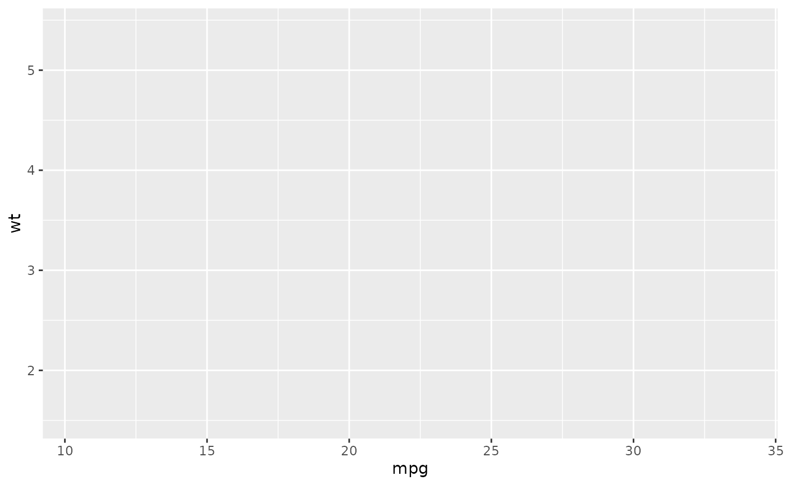

Generate code to create a ggplot2
Arguments
- data
Character. Name of the
data.frame.- mapping
List. Named list of aesthetics.
- geom
Character. Name of the geom to use (with or without "geom_").
- geom_args
List. Arguments to use in the geom.
- scales
Character vector. Scale(s) to use (with or without "scale_").
- scales_args
List. Arguments to use in scale(s), if
scalesis length > 1, must be a named list withscalesnames.- coord
Character. Coordinates to use (with or without "coord_").
- labs
List. Named list of labels to use for title, subtitle, x & y axis, legends.
- theme
Character. Name of the theme to use (with or without "theme_").
- theme_args
Named list. Arguments for
theme.- facet
Character vector. Names of variables to use in
facet_wrap.- facet_row
Character vector. Names of row variables to use in
facet_grid.- facet_col
Character vector. Names of col variables to use in
facet_grid.- facet_args
Named list. Arguments for
facet_wrap.- xlim
A vector of length 2 representing limits on x-axis.
- ylim
A vector of length 2 representing limits on y-axis.
Examples
# Default:
ggcall()
#> ggplot()
# With data and aes
ggcall("mtcars", list(x = "mpg", y = "wt"))
#> ggplot(mtcars) + aes(x = mpg, y = wt)
# Evaluate the call
library(ggplot2)
eval(ggcall("mtcars", list(x = "mpg", y = "wt")))

# With a geom:
ggcall(
data = "mtcars",
mapping = list(x = "mpg", y = "wt"),
geom = "point"
)
#> ggplot(mtcars) + aes(x = mpg, y = wt) + geom_point()
# With options
ggcall(
data = "mtcars",
mapping = list(x = "hp", y = "cyl", fill = "color"),
geom = "bar",
coord = "flip",
labs = list(title = "My title"),
theme = "minimal",
facet = c("gear", "carb"),
theme_args = list(legend.position = "bottom")
)
#> ggplot(mtcars) + aes(x = hp, y = cyl, fill = color) + geom_bar() +
#> labs(title = "My title") + coord_flip() + theme_minimal() +
#> theme(legend.position = "bottom") + facet_wrap(vars(gear,
#> carb))
# Theme
ggcall(
"mtcars", list(x = "mpg", y = "wt"),
theme = "theme_minimal",
theme_args = list(
panel.ontop = TRUE,
legend.title = rlang::expr(element_text(face = "bold"))
)
)
#> ggplot(mtcars) + aes(x = mpg, y = wt) + theme_minimal() + theme(panel.ontop = TRUE,
#> legend.title = element_text(face = "bold"))
# Theme from other package than ggplot2
ggcall(
"mtcars", list(x = "mpg", y = "wt"),
theme = "ggthemes::theme_economist"
)
#> ggplot(mtcars) + aes(x = mpg, y = wt) + ggthemes::theme_economist()
# One scale
ggcall(
data = "mtcars",
mapping = list(x = "mpg", y = "wt", color = "qsec"),
geom = "point",
scales = "color_distiller",
scales_args = list(palette = "Blues")
)
#> ggplot(mtcars) + aes(x = mpg, y = wt, color = qsec) + geom_point() +
#> scale_color_distiller(palette = "Blues")
# Two scales
ggcall(
data = "mtcars",
mapping = list(x = "mpg", y = "wt", color = "qsec", size = "qsec"),
geom = "point",
scales = c("color_distiller", "size_continuous"),
scales_args = list(
color_distiller = list(palette = "Greens"),
size_continuous = list(range = c(1, 20))
)
)
#> ggplot(mtcars) + aes(x = mpg, y = wt, color = qsec, size = qsec) +
#> geom_point() + scale_color_distiller(palette = "Greens") +
#> scale_size_continuous(range = c(1, 20))